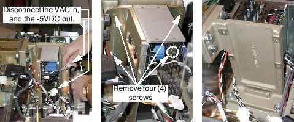
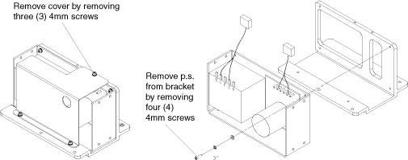
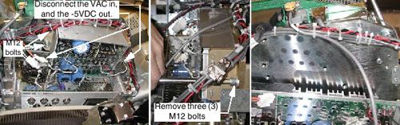
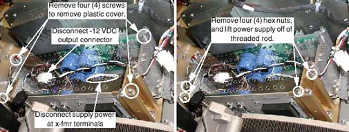
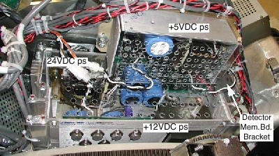
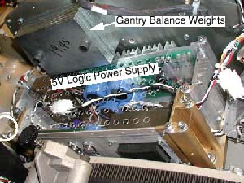

GEMS Proprietary Class: A
Direction 5117807-800, Rev# A
GEMS Proprietary Class: A |
| Required Persons | Preliminary Reqs | Procedure | Finalization |
|---|---|---|---|
| 1 |
There are several power supplies for the MDAS, including: -5VDC analog, +5VDC analog, 5VDC digital, -12VDC, +12VDC and 24VDC. To gain access to any of these, perform the following:
| Item | Qty | Effectivity | Part# | Manufacturer | |
|---|---|---|---|---|---|
| Standard FE Tool Kit | 1 | - | - | - | |
No consumables required.
| Item | Qty | Effectivity | Part# | Manufacturer | |
|---|---|---|---|---|---|
| See Illustrated Parts List | 1 | - | - | - | |
| POTENTIAL FOR ELECTROCUTION OR SHOCK. | |
| HAZARDOUS VOLTAGES ARE PRESENT IN THE GANTRY, EVEN WITH ALL SERVICE SWITCHES “OFF”. | |
| Servicing of the MDAS should be performed by qualified personnel only. |
No required conditions.
Remove gantry right side cover, and turn OFF all three (3) service switches on the Service Switch Panel (see Gantry Side Covers Removal and Re-install).
Remove the gantry left side cover.
Remove the gantry top covers (see Gantry Top Covers Removal and Re-install).
Rotate gantry so that the DAS assembly is in a position where the power supply can be easily accessed. This could be anywhere between the 9 o’clock and 3 o’clock positions, depending on which power supply is to be replaced and the availability of a stepping stool (to work from the top of the gantry).
| POTENTIAL FOR PERSONAL INJURY. | |
| UNCOMMANDED GANTRY MOVEMENT CAN OCCUR. | |
| Use the rotational lock to lock the gantry in position. See safety menu of Service Document gui for appropriate procedures. |
Lock the gantry in position, using the rotational locking pin (see “Rotational Locking Pin” section in (see Equipment Service - Gantry)).
| POTENTIAL FOR SHOCK | |
| VOLTAGE MAY BE PRESENT. | |
| Use proper lockout/tagout procedures before replacing components. See safety menu of Service Document gui for appropriate procedures. |
Perform Lockout Tagout procedures when replacing the power supplies to insure there are no voltages present.
The -5 volt DC power supply is located behind the center DAS chassis, attached to the casting (see Illustration 1).
Disconnect the supply power (2 pin, 120VAC) and supply output (3 pin, -5VDC) connectors.
Illustration 1: Remove the Power Supply from the Gantry

Remove the four (4) 4mm hex head screws that are used to mount the power supply to the cast metal bracket. Remove the power supply assembly from the gantry (see Illustration 2).
Illustration 2: Remove the Power Supply from its Mounting Bracket

Remove the power supply’s clear plastic cover, by removing the three (3) 4mm hex screws. Retain the cover, screws, three (3) washers and three (3) lock washers.
Remove the power supply from its mounting bracket, by removing the four (4) 4mm hex screws, four (4) washers and four (4) lock washers. Retain the hardware.
Mount the new power supply on its bracket, using the 4mm hex screws, washers and lock washers. Torque the screws to 1.4 N-m (12.39 in-lbs).
Reattach the clear plastic cover. Torque the 4mm hex screws to 0.7 N-m (6.2 in-lbs).
Mount the power supply assembly on the gantry, using 4mm hex screws and loctite 271.
Reconnect the supply output and supply power.
Restore power to the gantry and verify power supply output voltage (see DAS Power Supplies Checks). Adjust supply output, if necessary.
Reassemble the gantry covers.
The +5 volt DC analog power supply is located behind the right DAS chassis (see Illustration 3).
Disconnect the supply power (2 pin, 120VAC) and supply output (3 pin, -5VDC) connectors.
Illustration 3: Remove the Power Supply from the Gantry

Remove the three (3) 12mm hex head bolts that secure the power supply to the gantry. [Two bolts are located at one end of the power supply assembly, and the third is at the other end.] Lift the power supply assembly out of the gantry.
Remove the plastic cover by removing four (4) each: 4mm hex screws, washers and lock washers.
Remove the power supply from the bracket by removing the six (6) 4mm hex screws, six (6) washers and six (6) lock washers.
Attach the new power supply to the bracket, using 4mm hex screws, washers and lock washers. Torque the screws to 1.5 N-m (13.28 in-lbs).
Attach the plastic cover to the assembly, using 4mm screws, washers and lock washers. Torque the screws to 0.7 N-m (6.2 in-lbs).
Reattach the completed power supply assembly to the gantry, using the three bolts and lock washers. Torque the bolts to 66 N-m (48.68 ft-lbs).
Reconnect the supply output and supply power.
Restore power to the gantry and verify power supply output voltage (see DAS Power Supplies Checks). Adjust supply output, if necessary.
Reassemble the gantry covers.
The -12 VDC power supply is located behind the left DAS chassis, along with the +5VDC logic power supply (see Illustration 4).
Disconnect the -12VDC output connector from the power supply.
Illustration 4: -12VDC Power Supply Removal

Remove four (4) each 6mm hex screws, washers and lock washers, to remove the clear plastic cover from the left power supply assembly.
Disconnect the AC supply power at the transformer terminals.
Remove the four (4) 6mm hex nuts, four (4) washers and four (4) lock washers that hold the power supply in place.
Lift the power supply assembly off of the threaded rod.
Slide the new power supply onto the threaded rod, and secure with the 6mm hex nuts, washers and lock washers. Torque to 7.9 N-m (69.92 in-lbs).
Reconnect the AC supply power to the transformer terminals.
Replace the clear plastic cover, using 6mm hex screws, washers and lock washers. Torque screws to 7.9 N-m (69.92 in-lbs).
Reconnect the supply output connector.
Restore power to the gantry and verify power supply output voltage (see DAS Power Supplies Checks). Adjust supply output, if necessary.
Reassemble the gantry covers.
The +12 volt DC power supply is located behind the right DAS chassis, along with the +24V power supply (see Illustration 5). Replacement of this supply is virtually identical to that for the -12V supply.
For replacement details, see -12VDC Power Supply procedure.
Illustration 5: Location of +12VDC Power Supply

The +24 volt DC power supply is located behind the right DAS chassis, along with the +12V power supply (see Illustration 5, above). Replacement of this supply is virtually identical to that for the -12V supply (3.3.7.3), with the following exceptions:
The +5VDC power supply assembly must first be removed (see +5VDC Power Supply)
The Detector Memory Board Bracket may need to be removed (see Illustration 5)
For replacement details, see -12VDC Power Supply procedure.
| NOTE: | IMPORTANT: When replacing the power supply, be sure to reinstall the Detector Memory Board Bracket (if removed), in addition to the +5VDC power supply assembly. Make sure that the +5VDC assembly mounting screws are torqued to specification, 66 N-m (48.68 ft-lbs), and both its supply power and output connectors are reassembled. |
The +5 volt DC logic power supply is located behind the left DAS chassis, along with the -12VDC power supply (see Illustration 6). Replacement of this supply is virtually identical to that for the -12V supply (3.3.7.3), with the following exception: Gantry Balance Weights must be removed before the power supply can be removed.
| Weights MUST be replaced in the same order in which they are removed.
Gantry rotation will be adversely affected by improper balancing. Apply Loctite 271 to the threads, and torque the M12 mounting bolts to 66N-m (48.68 ft-lbs). | |
For replacement details, see -12VDC Power Supply procedure.
Illustration 6: Location of 5V Logic Power Supply

| NOTE: | Coil any excess lead length and tywrap to prevent movement during rotation. |
No finalization required.